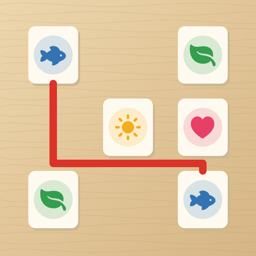

まだ解けるか分かる二角取り
取るたびに、まだ解けるかが分かる二角取り。
同じ絵の札2枚を、曲がり2回までの線でつなげれば取れる「二角取り」です。取るたびに、残りの札で最後まで取れる順があるかを先読みで調べて見せます。
- まだ解けるか。取るたびに「解けます」「解けない」を出します（大きい盤は時間を区切って調べます）
- 解けなくなった手。解けない形になったら、何組目を取ったときかを出し、その手の前にもどれます
- ヒントと線。ヒントは最後まで取れる順の1手目。取ったときは、つないだ線が出ます
- 盤は 小（24枚）・中（48枚）・大（72枚）。どの配りも、最後まで取れる順があることを確かめてから出します。札の絵は自前の記号です
- 登録・課金・オンラインの対戦はありません。記録はこの端末の中だけに保存します。画面のいちばん下に小さな広告が出ます（画面いっぱいの広告・動画の広告は出しません）